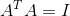
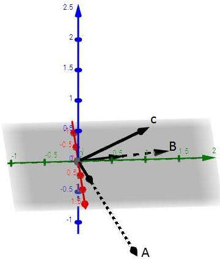
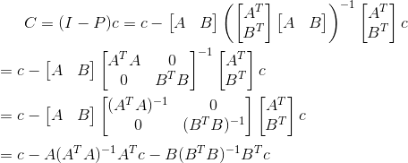
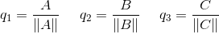

单位正交矩阵A有以下性质：
1. A转置与A相乘为单位矩阵

2. A转置为A的逆，由性质1就可知
3. A内的各组列向量互相正交，且每个列向量的长度都为1
那么如何让计算简单呢？比如要算最小二乘法：

比如要算投影矩阵P：
即是说，如果要对矩阵A进行处理前，先将矩阵A转换成单位正交矩阵就更有利于后期的处理。那么该如何进行转化？这里介绍一种方法——格拉姆-施密特正交化。
格拉姆-施密特正交化
讲这个方法前，得先了解投影矩阵，如果有不熟悉的可参阅什么是投影矩阵
先来看列空间为2维的矩阵的转换，已知有两条线性不相关的向量a,b，它们组成了矩阵的列空间：
我们先确定向量a不变，然后对b做对a的投影，从投影矩阵那节得知可以求得向量e和向量p，对于投影而言，我们需要的是向量p，但对于这次而言，需要的是向量e，如图：：
这样我们就得到两条正交的向量A和B，最后再各自分别单位化使长度为1，得到最终的结果q1和q2，其组成的矩阵Q为矩阵A转换后的单位正交矩阵：
那么公式该如何表示？首先确定一条向量，比如本次确定的是a，将其作为本次“基底”A:

然后确定B，就是b对A做投影求B：
最后分别单位化得q1,q2:
而由q1,q2组成的矩阵就是原来矩阵的单位正交化矩阵。
我们接下来看下高维的情况，以三维为例，假定有彼此线性无关的向量a,b,c，我们可以先遵循上例把A,B求出来，接下来求C：

因为要保持正交，即C与A及C与B都正交，这等价于C与AB组成的空间正交，转换成求C对AB空间的投影的e向量:
最后分别单位化即可得到q1,q2,q3:
那么用公式该如何表示？首先A,B的确认跟之前一致：
然后确定C，因为C与AB组成的平面正交，所以有：

最后单位化：

最终就得到了单位正交矩阵的全部列向量q1,q2,q3。
通过刚刚的公式推导，能得到一个一般规律：
这就是格拉姆-施密特正交化。下一节，讲讲行列式